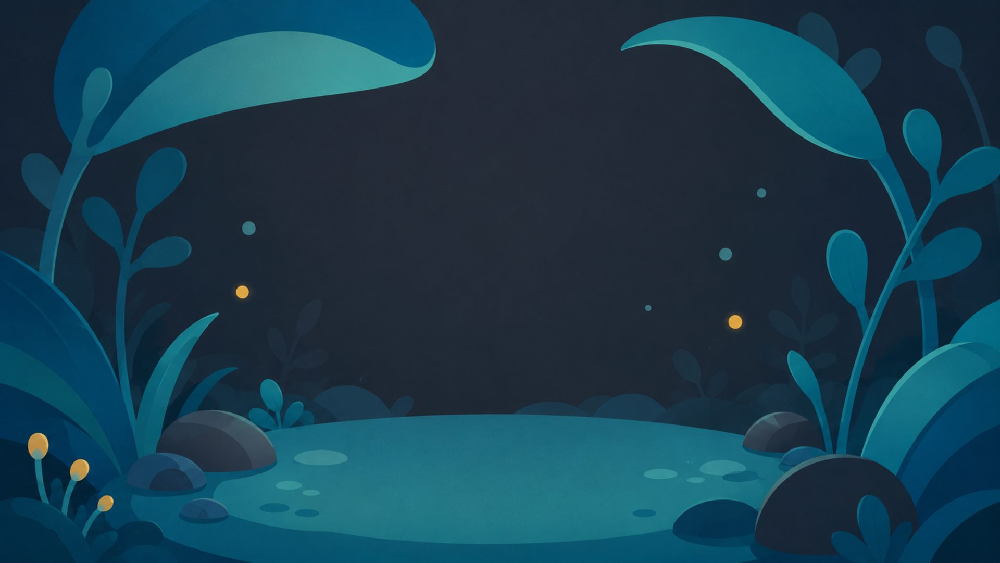
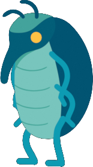
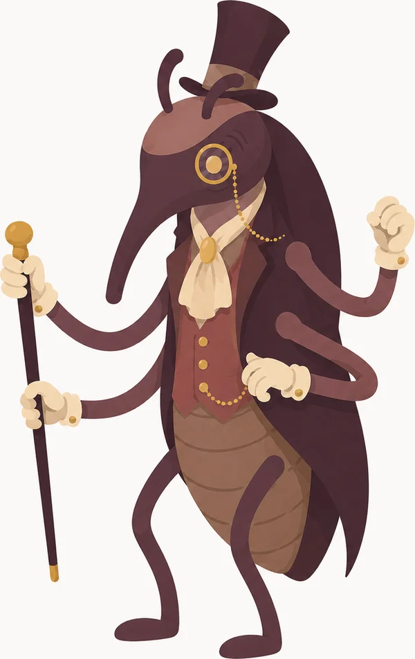

Welcome to Weevil World
Oddly specific quizzes, tiny diversions, and discoveries of questionable importance.
Featured exhibit · Personality assessment
What Weirdly Specific Thing Are You?
Six questions. Forty-five improbable outcomes. One answer that is somehow more accurate than it has any right to be.
Take the quizExhibit two · Minor divination
What Minor Omen Has Been Following You?
Six small questions about small things. One oddly specific sign, catalogued and filed, that's supposedly been trailing you.
Consult the cabinetNext exhibit · In progress
The cabinet is still being stocked.
More peculiar assessments, generators, and interactive oddities are on their way. Duke Weevilton is cataloguing them as quickly as his four hands allow.

A note from the curator
"This collection concerns the overlooked, the oddly revealing, and the difficult to explain at parties. New exhibits are being catalogued regularly."
— Duke Weevilton, Curator of Oddly Specific Things
Collection status: suspiciously incomplete
Oddly specific
Results with more personality than a generic type label.
Made to share
Small experiences that end in something worth sending to a friend.
Entirely unnecessary
No productivity. No optimization. Just a good few minutes.